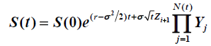

matlab project 2——蒙特卡洛模拟的美式期权
Stock prices sometimes change by large values in short periods of time, making a jump diffusion model be a more appropriate model to capture this characteristic than a plain diffusion model. We extend the Black-Scholes to include jumps, resulting in the following model in risk-neutral world,

where Yi ~U(1.1, 1.3) and N(t) is a Poisson process with lambda=4 per year.
其中Z服从标准正态分布。
思路如下：
- 先模拟出每个节点的股票价格S和在此点执行所能得到的收益f；
- 总共模拟MxN个，M代表M条路径，N代表将一段时间分为N期。用S(n)代表股价的每一列。
- 如果在S(n)选择执行，即f(n)>0,那么就将f(n+1)与对应的S(n)进行一元二次回归，得到一个模型，系数向量为p；
- 将S(n)全部代入模型中得到拟合值y；
- 将f与y进行比较，f>y的值就留下，f<y的值令其为0；
- 从左往右汇总f，如果某个值所在路径上它是第一个大于0的值，其值有效，否则无效。
代码如下（由于上述步骤中有很多需要判断，这样写代码就会显得很乱而且很长，所以充分利用matlab矩阵运算和逻辑运算简化了代码）：
ps：运行代码有彩蛋哦。。（我真无聊(￣、￣)）
function [P]=regressionP(M,N)
r=0.1;
sigma=0.1;
S0=90.44;
K=110;
T=3;
lambda=4;
dt=T/N;
S=zeros(M,N+1);
S(:,1)=S0;
f=zeros(M,N+1);
f(:,1)=0;
X=random('poisson',lambda*dt,M,N);
%下面的循环用来计算股票每个节点的价格以及执行所能得到的收益
for i=1:M
for j=2:N+1
Y=1.1+0.2*rand(1,X(i,j-1));
m=prod(Y);
S(i,j)=S(i,j-1)*exp((r-sigma^2/2)*dt+sigma*dt^0.5*randn())*m;
f(i,j)=max(K-S(i,j),0);
end
end
P=0;%初始化期权价格P
y=zeros(M,N-1);%初始化回归预测值
d=zeros(M,1);%初始化用来最后计数的值
for i=2:N
a=f(:,i+1);
b=S(:,i);%储存股票的价格
W=a(f(:,i)>0)*exp(-r*dt);
s=b(f(:,i)>0);
p=polyfit(s,W,2);%p是回归得到的系数
y(:,i)=polyval(p,b);
f(:,i)=f(:,i).*(f(:,i)>y(:,i)*1);%f矩阵中大于y的留下，小于y的为0
d=d+(f(:,i)>0)*1;
q=f(:,i);%储存f每一列
P=P+sum(q(d==1))*exp(-r*dt*(i-1));%只取每条路径上第一个大于0的f
end
%最后一列没有包含在循环中，单独计算，最后得到美式看跌期权价格P
d=d+(f(:,N+1)>0)*1;
q=f(:,N+1);
P=(P+sum(q(d==1))*exp(-r*T))/M;
load handel.mat;
sound(y)